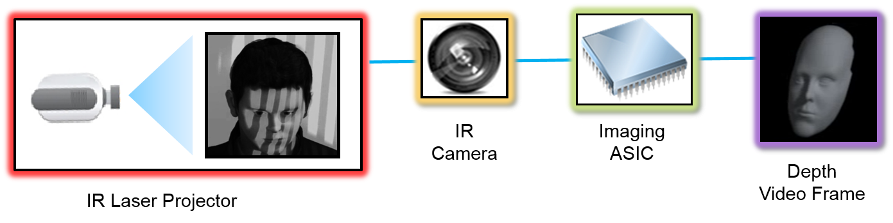

Hand Tracking and Gesture for WebVR
Ningxin Hu / Intel / @NingxinHu
“They watch some demos or play a game and walk away saying how impressive it is, but almost everyone makes a remark about how they wish they had hands.”
- Brandon Jones
Depth Camera
 Media Capture Depth Stream ExtensionsTwo Kinds of Hand Tracking
- Skeleton Tracking
- Cursor Tracking
Skeleton Tracking
Skeleton Tracking
- For avatar hand tracking
- More computing
- WebSocket impl by HW vendors, Web APIs?
Cursor Tracking
Cursor Tracking
- For accurate UI control
- Less computing
- Pointer Event Extension?
Gestures Recognition

Source: HoloLens Use Gestures
Gestures Recognition
- High-level events
- HW acceleration
- Patents?
“So my prediction is that in five years we'll see good avatar hand tracking and gesture-based simple interface control”
- Michael Abrash